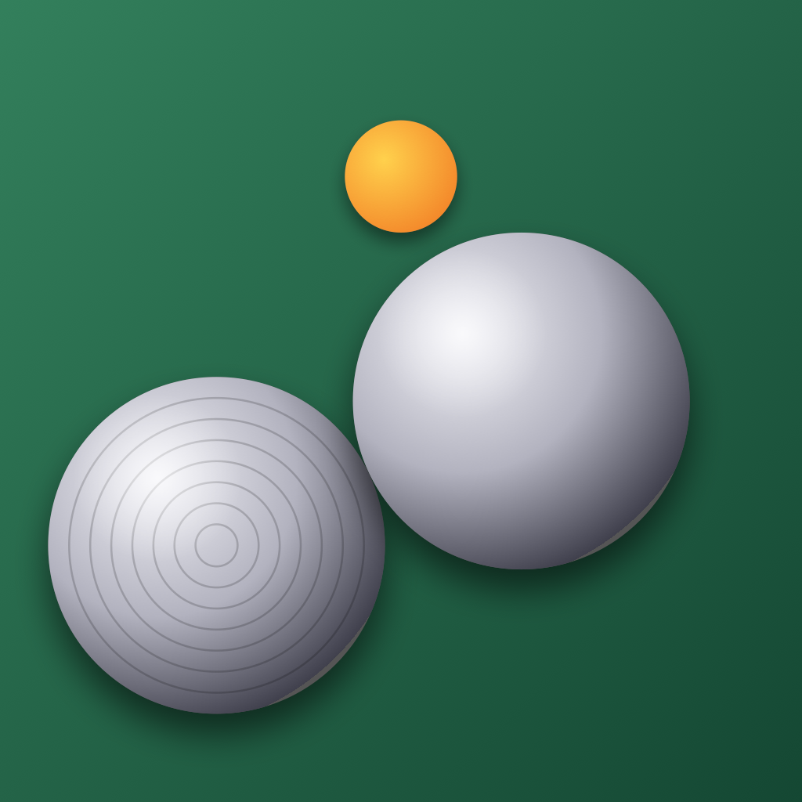

BoulesDay
Eendaagse pétanque-toernooien, simpel beheerd.
BoulesDay is een iPad-app voor wedstrijdleiders bij pétanque-verenigingen. Voer de teams in, druk op "schema genereren", en je bent klaar om de dag te beheren — scores invullen, ranglijst meekijken, scorebriefjes en eindstand printen.
Geen account, geen reclame, geen gedoe. Wat je invoert blijft op je iPad en synct via iCloud naar je eigen iPhone of andere Apple-apparaten.
Beschikbaar als beta
BoulesDay is op dit moment in beta-test via TestFlight. Wedstrijdleiders die willen meedoen: stuur me een mailtje en je krijgt een uitnodiging.
Wat zit er in
Toernooi opzetten
Naam, datum, vereniging, banen, regels, rondes met aanvangstijden, pauzes, teams.
Schema genereren
Random paringen volgens NJBB-spec, byes evenredig verdeeld, baan-toewijzing automatisch.
Scores invoeren
Per ronde wedstrijdkaarten met een tap. Live-update van de ranglijst onderaan.
Printen
Schema, scorebriefjes (één A4 per team) en eindstand als PDF — printen of delen.
iCloud-sync
Werkt op je iPad én iPhone met dezelfde Apple-ID. Geen configuratie.
Geen reclame, geen account
Open de app en aan de slag. Alle gegevens blijven van jou.